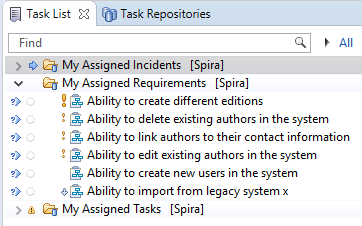
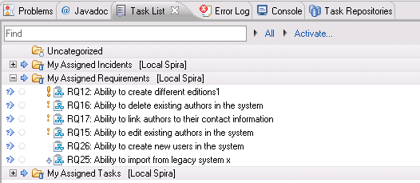
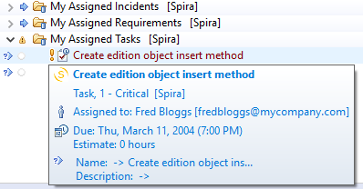
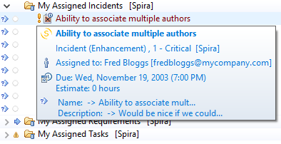

Eclipse / Mylyn
This section outlines how to use SpiraTest, SpiraPlan or SpiraTeam (hereafter referred to as SpiraTeam) in conjunction with the Eclipse integrated development environment (IDE) for implementing Requirements, completing Tasks and fixing Incidents. Rather than develop a new user-interface from scratch, the SpiraTeam plug-in uses the generic Mylyn task-based interface that allows Eclipse users to manage their local tasks and tasks from any compatible repository in a single interface.
Installing the Eclipse Plug-In
This section outlines how to install the SpiraTeam plug-in for Eclipse. It assumes that you already have a working installation of SpiraTest, SpiraPlan or SpiraTeam v5.0 or later and a working installation of Eclipse v4.6 (Neon) or later with the Mylyn plug-in installed.
If you have an earlier version of SpiraTeam, you will need to upgrade to at least v5.0 before trying to integrate with Eclipse.
To obtain the Eclipse plug-in, open up the Eclipse application and click on Help > Eclipse Marketplace. Enter "SpiraTeam" in the 'Find' text box. Once you hit enter, you should see the following result:

Click the Install button, accept the terms of the license and click "Finish". Eclipse will advise you that our software contains unsigned content, press "OK" to continue the installation. After you restart Eclipse, you can start to use our plug-in.
Alternatively, you can click Help > Install New Software. This will display the Eclipse installation wizard:
Enter https://www.inflectra.com/Downloads/Eclipse as the download site in the "Work with:" text box and uncheck the "Group items by category" checkbox. Once you hit enter, the wizard should display "SpiraTeam". Select the Feature's checkbox and click "Next" or "Finish" to tell Eclipse to download and install the feature and dependent plug-ins. During this process you may be asked to agree to our software license and to allow the installation of unsigned software. Once you have completed these steps, you should now have our SpiraTeam plug-in installed and ready to use.
To check that the individual plugins have been installed, you can go to Help > About Eclipse and then click on the [Installation Details] button. On the page that appears, click on the Plugins tab and you will see the two Inflectra plugins listed (Core and UI).
Now that you have the plug-ins installed, the next steps are:
-
Connect to the appropriate SpiraTeam repository
-
Download your assigned SpiraTeam artifacts (Requirements, Tasks and Incidents)
-
Work on the downloaded SpiraTeam artifacts
Connecting to the SpiraTeam Repository
To connect to a SpiraTeam repository, you need to first display the appropriate Eclipse views. To do this, go to Window > Show View > "Other..." and then under the Tasks section, display both the Task Repositories view and the Task List view:

Once you have chosen to select the Task Repositories, the following tab will be displayed:

Where any existing repositories will listed along with the built-in "Local" repository that is used to manage tasks created natively within Eclipse/Mylyn.
To connect to a new SpiraTeam repository, right-click on the window and choose "Add Task Repository..." which will bring up the following selection box:
Choose the "Spira" repository entry and click [Next]. This will bring up the repository configuration dialog box:

On this screen, you need to fill out the information used to connect to your SpiraTeam server:
Server -- This should be the URL to the SpiraTeam instance that you are accessing.
Label -- This is a "friendly" name for that server that will be used inside Eclipse.
User ID -- This needs to be a valid username that has access to SpiraTeam.
Password -- This needs to be the correct password for the username specified.
Once you have entered the information, click [Finish] to complete the "Add Repository" wizard. Once this has been done, Eclipse will ask you if you would like to add a new query for this repository. You can choose either Yes or No. The process for adding a new query to the SpiraTeam repository is described in the next section.
Adding Queries to the Repository
Once you have added the SpiraTeam repository, the repository list view should now look something like:

You can now add a new query by right-clicking on the SpiraTeam repository instance and choosing "New Query...". This will bring up the new query wizard:

Currently the SpiraTeam Eclipse/Mylyn plugin only supports the three predefined queries listed above. You can choose to add a list of Requirements, Incidents or Tasks that are assigned to you. Once you have added the appropriate queries (depending on which types of artifact get assigned to you), the list of Requirements, Incidents and or Tasks will be downloaded from the server and added to your Task List in Eclipse:

When you hover the mouse over any of the items in the list of Requirements, Incidents or Tasks, you will see a popup tooltip that provides additional information:

Artifacts in the list have various states, based on your interaction with them. Unread artifacts are those with new changes, which you haven't seen yet. These artifacts are denoted as having "incoming changes" (coming from repository). When you open and edit the artifact, it will have local modifications which haven't been sent to SpiraTeam repository yet (outgoing changes).
The following UI Legend explains meaning of various icons which are displayed in the Eclipse/Mylyn Task List:

As you can see, the different SpiraTeam artifacts are represented by different graphic overlays that let you know if the Eclipse/Mylyn task is really a SpiraTeam Requirement, Incident or Task.
To refresh the list of tasks in Eclipse, you can either right-click on the appropriate query folder and choose "Synchronize" or just press the F5 key on the keyboard.
Each of the different artifacts (Requirements, Incidents and Tasks) works slightly differently, so please refer to the appropriate section for details on how to view and edit.
Viewing and Editing Requirements in Eclipse
When you view the list of Requirements in the Eclipse task list, it will have the following general form:

Each Requirement is listed by name and number, together with its importance indicated by the equivalent Eclipse/Mylyn priority icon. To view the details of a specific Requirement, you should double-click on the Requirement, and the Requirements editor will be opened:

The Requirements editor screen is divided up into several sections:
Header -- this displays the name and ID of the Requirement, together with a graphical indication of its priority, its status, creation date and last-update date.
Attributes -- this displays the various SpiraTeam-specific attributes of the Requirement, including status, importance, scheduled release, component ID and planned effort. Any custom properties defined for the requirement will also be displayed.
Attachments -- this displays the list of documents, web-links and screenshots attached to the Requirement. You can also upload new files and screenshots to the Requirement from within Eclipse.
Description -- this displays the detailed description of the Requirement.
Comments -- this displays a threaded list of all the comments that have been added to the Requirement in SpiraTeam.
New Comment -- this allows you to add a new comment to the Requirement. The new comments will be sent to the SpiraTeam server when [Submit] is clicked.
People -- this displays the name and email address of the person who wrote the Requirement (author) and the person who it's currently assigned-to (owner).
Operations -- this contains the list of operations that can be performed on the Requirement. More information on operations can be found below.
You can make changes to the Requirement by simply changing the values in the appropriate dropdown list or editing the information in any of the text boxes. Once you have happy with the changes, you can update the version on the SpiraTeam server by clicking the [Submit] button. If there are any data validation errors, they will be displayed. Once you have corrected them, the Requirement changes will be accepted by the system.
In addition to making updates, you can perform the following actions on the Requirement:
Workflow Transitions -- these are the blue hyperlinks displayed directly above the [Submit] button in the actions tab. These allow you to change the status of the Requirement and when clicked, the fields in the Attributes section will change based on the new status. Note: changing the Type of the Requirement will disable the workflow transition hyperlinks until [Submit] is clicked.
Refresh the Requirement from the version on the server. This will update the local copy of the Requirement with the latest changes made on the SpiraTeam server.
Browse the version of the Requirement on the server. Clicking the "globe" icon will open up a browser and display the Requirement directly in SpiraTeam.
Viewing and Editing Tasks in Eclipse
When you view the list of Tasks in the Eclipse task list, it will have the following general form:

Each Task is listed by name and number, together with its priority indicated by the equivalent Eclipse/Mylyn priority icon. To view the details of a specific Task, you should double-click on the Task, and the Tasks editor will be opened:

The Tasks editor screen is divided up into several sections:
Header -- this displays the name and ID of the Task, together with a graphical indication of its priority, its status, creation date and last-update date.
Attributes -- this displays the various SpiraTeam-specific attributes of the Task, including status, scheduled release, priority, start-date, end-date, % complete, estimated effort, actual effort, the name/id of the Requirement it belongs to and its component. Any custom properties defined for the task will also be displayed.
Attachments -- this displays the list of documents, web-links and screenshots attached to the Task. You can also upload new files and screenshots to the Task from within Eclipse.
Description -- this displays the detailed description of the Task.
Comments -- this displays a threaded list of all the comments that have been added to the Task in SpiraTeam.
New Comment -- this allows you to add a new comment to the Task. The new comments will be sent to the SpiraTeam server when [Submit] is clicked.
People -- this displays the name and email address of the person who created the Task (creator) and the person who it's currently assigned-to (owner).
Operations -- this contains the list of operations that can be performed on the Task. More information on operations can be found below.
You can make changes to the task by simply changing the values in the appropriate dropdown list or editing the information in any of the text boxes. Once you have happy with the changes, you can update the version on the SpiraTeam server by clicking the [Submit] button. If there are any data validation errors (e.g. you have to enter a start-date to make the Task In-Progress), they will be displayed. Once you have corrected them, the Task changes will be accepted by the system.
In addition to making updates, you can perform the following actions on the Task:
Workflow Transitions -- these are the blue hyperlinks displayed directly above the [Submit] button in the actions tab. These allow you to change the status of the Task and when clicked, the fields in the Attributes section will change based on the new status. Note: changing the Type of the Task will disable the workflow transition hyperlinks until [Submit] is clicked.
Refresh the Task from the version on the server. This will update the local copy of the Task with the latest changes made on the SpiraTeam server.
Browse the version of the Task on the server. Clicking the "globe" icon will open up a browser and display the Task directly in SpiraTeam.
Viewing and Editing Incidents in Eclipse
When you view the list of Incidents in the Eclipse task list, it will have the following general form:

Each Incident is listed by name and number, together with its priority indicated by the equivalent Eclipse/Mylyn priority icon. To view the details of a specific Incident, you should double-click on the Incident, and the Incidents editor will be opened:
The Incidents editor screen is divided up into several sections:
Header -- this displays the name and ID of the Incident, together with a graphical indication of its priority, its status, creation date and last-update date.
Attributes -- this displays the various SpiraTeam-specific attributes of the Incident, including priority, severity, status, type, detected release, resolved release, verified release, start-date, closed-date, % complete, estimated effort, actual effort and component Id's. Any custom properties defined for the incident will also be displayed.
Attachments -- this displays the list of documents, web-links and screenshots attached to the Incident. You can also upload new files and screenshots to the Task from within Eclipse.
Description -- this displays the detailed description of the Incident.
Comments -- this displays a threaded list of all the comments that have been added to the Incident in SpiraTeam.
New Comment -- this allows you to add a new comment to the Incident. The new comments will be sent to the SpiraTeam server when [Submit] is clicked.
People -- this displays the name and email address of the person who found the Incident (detector) and the person who it's currently assigned-to (owner).
Operations -- this contains the list of operations that can be performed on the Incident. See below for more information on how to use this section.
You can make changes to the Incident by simply changing the values in the appropriate dropdown list or editing the information in any of the text boxes. Once you have happy with the changes, you can update the version on the SpiraTeam server by clicking the [Submit] button. If there are any data validation errors (e.g. you have to enter a start-date to make the Incident In-Progress), they will be displayed. Once you have corrected them, the Incident changes will be accepted by the system.
In addition to making simple updates, you can perform the following actions on the Incident:
Submit -- clicking the submit button will commit the changes made on the Incident to the SpiraTeam Server.
Workflow Transitions -- these are the blue hyperlinks displayed directly above the [Submit] button in the actions tab. These allow you to change the status of the Incident and when clicked, the fields in the Attributes section will change based on the new status. Note: changing the Type of the Incident will disable the workflow transition hyperlinks until [Submit] is clicked.
Refresh the Incident from the version on the server. This will update the local copy of the Incident with the latest changes made on the SpiraTeam server.
Browse the version of the Incident on the server. Clicking the "globe" icon will open up a browser and display the Incident directly in SpiraTeam.